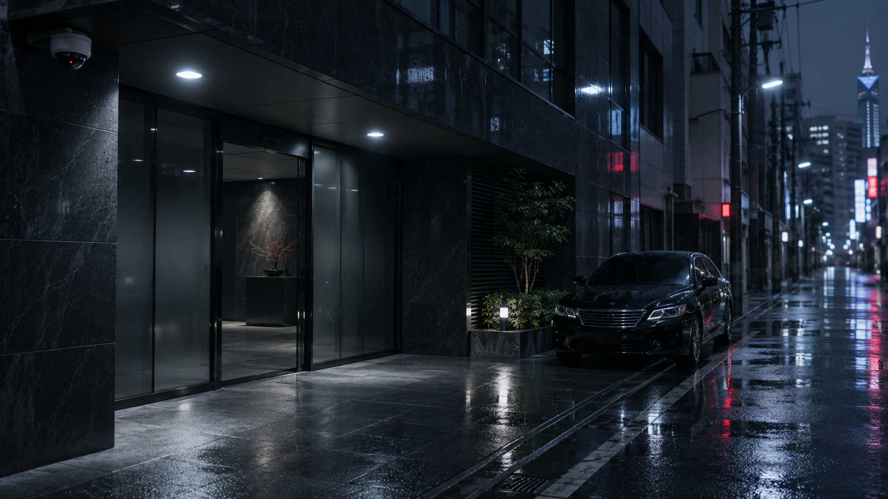
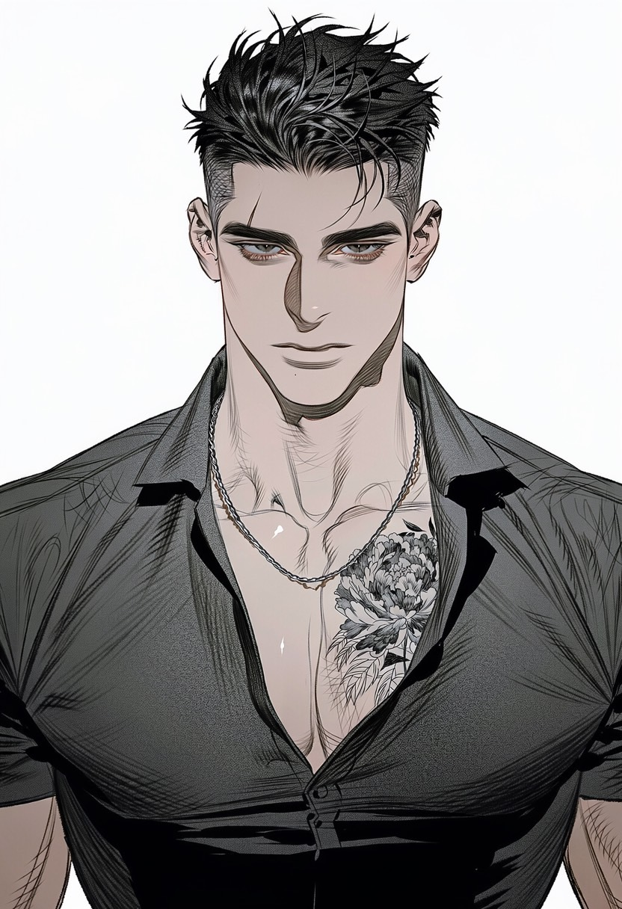
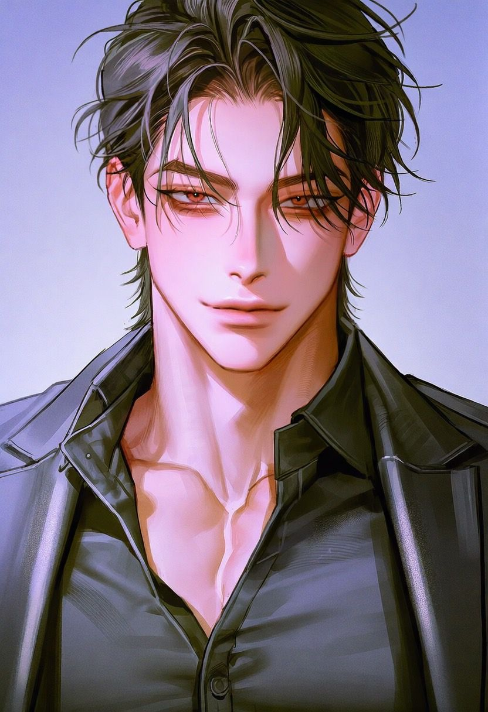
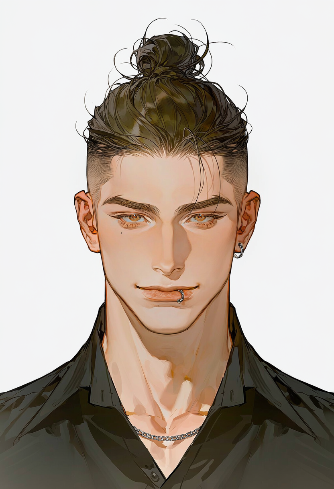
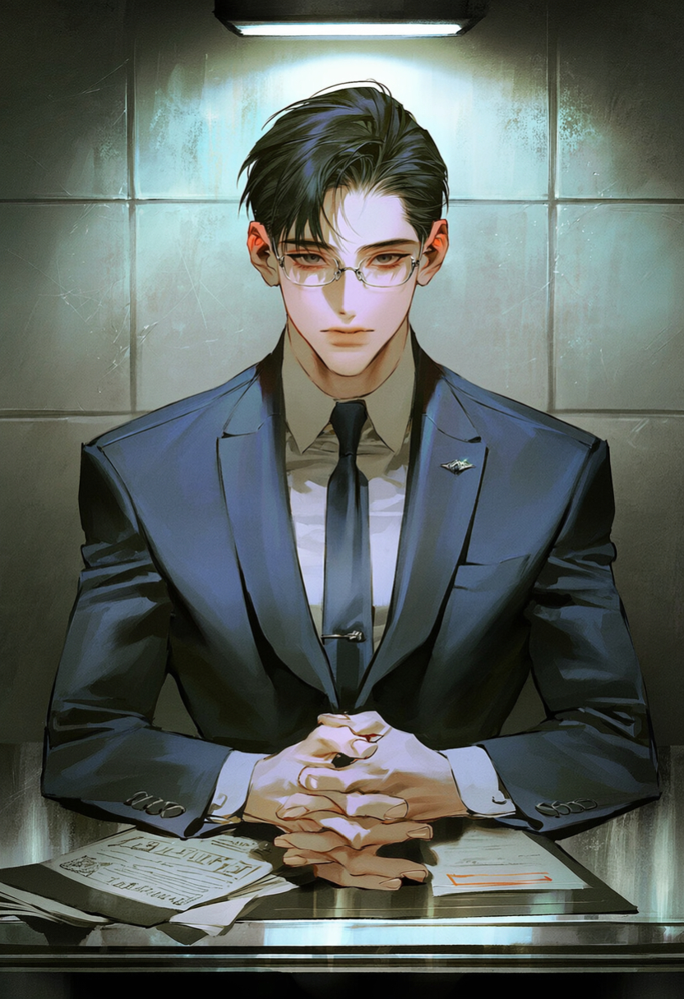
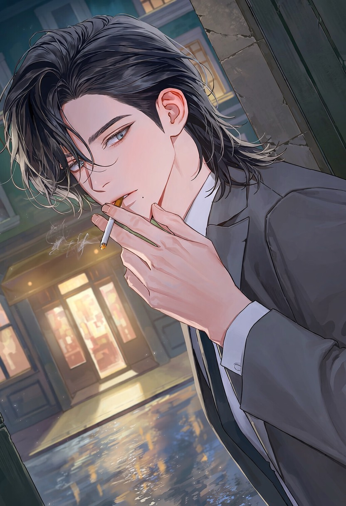
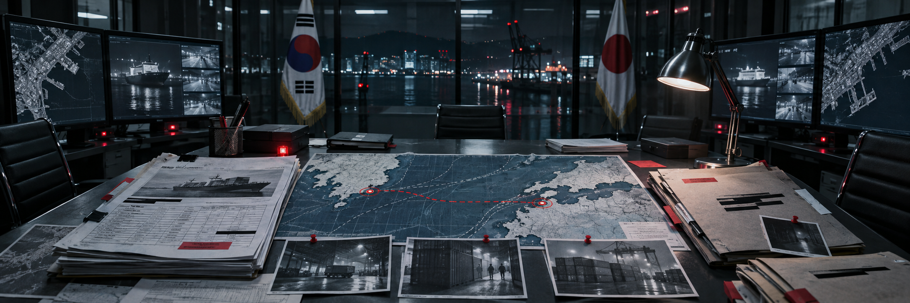

日韓合同捜査資料 / BUSAN — HAKATA — TOKYO● LIVE FILE // ACCESS LOGGED한국어 ↗
Republic of Korea × Japan
Cross-border Organized Crime Desk◈ LEVEL 01
機密ファイル
アクセス許可
CASE FILE 26-KJ-041 / 日韓合同捜査
SECURE GATEWAY // BORDERLINE ENCRYPTED
機密ファイルへのアクセスを確認
ACCESS GRANTEDLEVEL 01 / 承認済み
BORDERLINE
境界を越える取引、境界を守る捜査。
釜山と博多、そして神城会の勢力圏が同じ境界線上で交差する。
01 — Situation report
事件概要 / 情報要約
以下は、現在までに入手した情報と関係機関の共有資料に基づく。取引の全容と背後関係は未確認である。
2026年、釜山港から福岡・博多へ続く既存の物流網で、これまでにない規模の密取引の兆候が確認された。釜山を拠点とする中堅組織・海津会と、日本最大級の広域暴力団・神城会の勢力圏に属する組織が、それぞれの縄張りと体制を保ちながら取引を進めている。成立すれば、両組織の勢力図と港湾物流の支配権が揺らぐ可能性がある。
韓国側は釜山港の貨物と下請け網から、日本側は博多の資金の流れと接触網から捜査を開始した。別々に見えた事件は、釜山—博多を結ぶ同一の物流ルートで交差する。取引を成立させる者、情報を奪う者、責任を押しつける者が、同じ境界線に集まりつつある。
AREA / 管轄韓国・釜山／釜山港
日本・福岡／博多
SUBJECT / 対象海津会の物流網と
神城会勢力圏の取引
ASSESSMENT / 関係上下関係ではなく
利害で結ばれた取引相手
02 — Organization network / 釜山 — 博多
組織網ファイル / 港を越える取引
事件の接点は組織本部ではなく、正規物流と非公式取引が重なる港湾ネットワークにある。各組織が共有する情報は必要な範囲に限られ、全体像を把握する者は少ない。
ROK / BUSAN PORT · EVIDENCE STILL 01
ROK / BUSAN · MID-SCALE
活動中海津会 海津會
釜山を拠点とする中堅組織
釜山港の港湾労働、遊興業、高利貸し、警護業を基盤に勢力を広げた。先輩後輩の序列を保ちながら、事業運営は実務中心に企業化されている。喧嘩の強さだけでなく、人と金を正確に動かし、事故を収拾し、任された仕事を完遂する能力が評価される。不要な騒ぎは商売の妨げであり、暴力は権威の誇示より問題解決の手段に近い。合言葉は「自分の仕事は正確にやり遂げる」。

JPN / HAKATA · EVIDENCE STILL 02JPN / TOKYO HQ · 8-CITY REACH
広域勢力神城会
日本最大級の広域暴力団
東京に総本部を置き、博多・大阪・横浜など八都市に勢力を持つ。各地域組織は本部の影響下にありながら、現地の利害や取引条件に応じて独自に動く。一ノ瀬組は神城会の直系傘下組織。組長の一ノ瀬宗司は、かつて神城会傘下の桐生組を掌握・再編し、一ノ瀬組を立ち上げた。
CORPORATE FRONT / BUSAN PORT LOGISTICS
公的記録：正常ヘダムロジス株式会社 HAEDAM LOGIS
宅配 · 企業物流 · 倉庫保管 · 港湾輸送 · 国際輸送 · 輸出入物流
海津会が実質的な影響力を持つ総合物流企業。釜山で創業し成長した中堅企業として知られ、釜山・慶尚南道では配送車や荷箱をよく見かける。組織の非公式取引は、運送会社、倉庫、下請け業者、港湾労働者、海外取引先をつなぐ正規物流網に紛れて運ばれる。社員全員が海津会と関係しているわけではない。大半の一般社員は関係を知らず、一部の役員・管理職・現場責任者だけが組織と直接つながっている。
BUSAN
ヘダムロジス・釜山港→HAKATA
国際輸送・取引接点→8-CITY NETWORK
神城会の勢力圏
CORPORATE FRONT / HAKATA TRADE & LOGISTICS
PUBLIC RECORD: CLEANNEXUS TRADING（ネクサス・トレーディング）
NEXUS TRADING CO., LTD. · 本社：福岡県福岡市 · 総合貿易・物流関連企業 · 関係組織：一ノ瀬組
博多で創業し、国内外に取引先を持つ中堅貿易会社。日本国内の企業間取引に加え、韓国を中心とした東アジアとの輸出入事業にも強い。主な事業は国際貿易、輸出入、海上貨物輸送、倉庫保管、港湾関連事業。博多港周辺に事業拠点を持ち、地域企業との取引実績も多い。一ノ瀬組が実質的な影響力を持つ企業であり、組織の資金源・対外的な事業基盤の一つとなっている。韓国側の海津会が影響力を持つヘダムロジスとは、釜山・博多間の取引を通じて関係を築いている。一ノ瀬組のフロント企業であり、経営陣の一部は組織との関係を把握している。しかし一般社員の大半はその実態を知らず、通常の民間企業として働いている。
国際貿易・輸出入
国内外の企業間取引→海上貨物輸送
港湾関連事業→倉庫保管・貨物管理
博多港周辺に拠点
BILATERAL TRADE / PARTNERS, NOT SUBORDINATES
釜山—博多取引
BUSAN PORT ↔ FUKUOKA · HAKATA
海津会と福岡・博多を拠点とするヤクザ組織は、上下関係ではなく利害の一致で結ばれた取引相手に近い。ヘダムロジスの釜山港・国際物流網が主な基盤となる。最近、過去最大規模の取引が進み、両国の捜査機関がそれぞれ異常を察知した。品目と最終目的は未確定で、合弁設定に応じて拡張できる。現場担当者は輸送予定しか知らず、交渉担当者は条件を把握していても現場運営に関与しない場合がある。
03 — Personnel index / 06 profiles
人物ファイル / 境界線登録簿
釜山の海津会、日本側組織、そして両国の潜入捜査官を境界線の両側に配置した。カードを選ぶと各人物の詳細ファイルが開く。
BORDERLINE / 境界線
海津会BUSAN / 海津會
日本側組織神城会 NETWORK / HAKATA

PHOTO / KR-01
KR-01 / FILE OPEN現場管理責任者
モ・ダヌ
海津会・ヘダムロジスの現場実務と港湾貨物を担当。 [カードを選択して詳細を表示]
OPEN PERSONNEL FILE ↗

PHOTO / JP-01
JP-01 / FILE OPEN組長
一ノ瀬 宗司
神城会直系・一ノ瀬組の組長。博多を拠点に韓国との取引を担当。 [カードを選択して詳細を表示]
OPEN PERSONNEL FILE ↗

PHOTO / KR-02
KR-02 / FILE OPEN室長
チョ・ホン
海津会の対外協力室長。日本側との連絡・交渉と組織内調整を担当。 [カードを選択して詳細を表示]
OPEN PERSONNEL FILE ↗
PHOTO / JP-02
JP-02 / FILE OPEN若頭
花斗 光流
日本側組織の若頭。組長に絶対的な忠誠を誓う。 [カードを選択して詳細を表示]
OPEN PERSONNEL FILE ↗
日韓共同捜査 / 潜入捜査官

PHOTO / K-INV
K-INV / SEALED検事 / 専従捜査
姜默賢（カン）
日韓組織犯罪専従チームの検事。釜山港の物流・資金の流れと組織癒着を捜査。 [カードを選択して詳細を表示]
OPEN PERSONNEL FILE ↗

PHOTO / J-INV
J-INV / SEALED警視庁 / 潜入
瀬戸 真澄
警視庁国際犯罪対策課。元用心棒を装い一ノ瀬組に潜入。 [カードを選択して詳細を表示]
OPEN PERSONNEL FILE ↗
韓国側日本側潜入要員 / 身元秘匿
04 — Operation log / timeline incomplete
共通事件 / 密取引の追跡
以下は固定された結末ではなく、共通世界観の基準となる時系列である。実際の展開は人物の選択と個別ルートによって変化する。
釜山港の貨物移動と下請け網を追う韓国側捜査チームが、海津会周辺で大規模取引の兆候をつかむ。
博多の資金の流れと接触記録を追っていた日本側も、同じ頃に異常を察知する。当初、両国は別件として捜査を始めた。
釜山—博多の物流ルートが重なると判明し、両国の捜査官が共同捜査に入る。過去に同じ任務を経験しており、互いの顔と実力を知っている。
協力を続けながらも、両者は自国の捜査権、現場指揮、最終的な功績をめぐって競り合う。情報共有の範囲や逮捕実績の帰属は、たびたび交渉の対象となる。
05 — Joint task force / limited disclosure
関係機関 / 共同捜査の現状

ROK ↔ JPN / 共同捜査本部 · 証拠写真ROK / BUSAN
韓国の捜査機関
釜山港を中心に、海津会とヘダムロジスの貨物移動、下請け業者、港湾労働者の動きを追う。日本側と協力する一方、国内の捜査権と事件の主導権、成果の帰属を確保しようとする。
JPN / HAKATA
日本の捜査機関
博多を拠点に神城会勢力圏の資金の流れと地域組織の接触網を追う。韓国側捜査官とは過去に共闘し、その実力を知っているが、日本国内の主導権と功績を譲るつもりはない。
SHARED INTELLIGENCE
LIMITED両国の捜査官は以前の任務で共に働き、互いの顔と能力を知っている。今回も取引網を断つため協力するが、自国の捜査権と現場指揮を守ろうとする。重要情報の先行共有、作戦決定権、逮捕実績と捜査功績をめぐって競争する。相手を信頼に値する実力者と認めながら、手柄を奪われる可能性も警戒している。
AGE / HEIGHT29歳 · 188cm
AFFILIATION海津会 / ヘダムロジス
POSITION現場管理責任者 · 直属上司：チョ・ホン室長
外見
釜山出身。大柄で肩幅が広く、長年身体を使って鍛えた実務的な筋肉質。短い黒髪を無造作に立ち上げる。太い直線眉、奥二重に近い細い目、黒い瞳。右眉に短い傷跡があり、左目の下と下唇の下に小さなほくろがある。左胸には大きな白黒の牡丹の刺青。
性格・口調
無口で実直、責任感が強い。簡単に取り乱さず、怒るほど口数が減る。無用な喧嘩は好まないが、必要と判断すれば迷わず力を使う。困っている人や自分より弱い人を見過ごせず、特別な親切ではなく「自分にできるからやる」と考える。自分の不調を後回しにし、「大丈夫です」とよく言う。人からの好意や愛情を受け取るのは少し苦手。普段から釜山方言を使い、親しい相手や怒った時ほど濃くなる。
「自分がやりますけん。」（釜山方言）
「あんたは後ろにおれ。これは俺の仕事だ。」（釜山方言）
仕事
ヘダムロジスの現場管理責任者であり、海津会の現場実務を担う。人員配置、貨物の引き取り・移動、港湾現場での問題収拾を担当する。事故が起きれば先に収拾し、その後で責任の所在を整理する。チョ・ホン室長から目的と期限を受け取った後の細かな現場運営は、自分で判断して進める。
好み・特記事項
あんパンと牛乳、雨の日、静かな場所、花や植物が好き。ストレスが溜まるとあんパンと牛乳を買う。騒がしい酒席やクラブより人の少ない場所を好む。恩を売って返済を迫る人、花を踏みにじる行為、身近な人を脅迫に使う行為、弱者いじめ、責任転嫁を嫌う。
黒や暗色のシャツをよく着る。厚い胸板が薄いシャツ越しに目立つのを少し気にして、ニップルパッチを貼る。なければ普通の絆創膏で代用し、理由を聞かれると「見えたら恥ずかしいじゃないですか」と真顔で答える。ボタン付けなど簡単な裁縫も得意。
関係性
相手の性別にこだわらない。人を守る側には慣れているが、自分が世話をされると弱い。治療や食事、帰宅確認といった些細な気遣いに思いのほか揺れる。受け身ではなく、相手が危険なら前に出て自分で決断する。
AGE / HEIGHT38歳 · 195cm
AFFILIATION神城会直系 · 一ノ瀬組
POSITION / ORIGIN組長 · 福岡・博多
外見
黒髪に赤褐色の瞳。長身で筋肉質な体格。上質な黒いスーツを好み、刺青は入れていない。
人物像
飄々として頭の回転が速く、常に余裕ある態度を崩さない。毒舌でサディスティック。相手を挑発し、追い詰めることを楽しむ冷酷な男。損得勘定に長けているが、自分の美学や筋に反することには、損をしても決して従わない。極道としての独自の筋と美学を持つが、善人ではない。
経歴・組織内の立場
かつて博多の半グレだった。神城会会長・神城征一郎に拾われ、親子の盃を交わす。その後、神城会傘下の桐生組で組長を粛清して組織を掌握し、再編して一ノ瀬組として発足させた。現在は博多を拠点に韓国との取引も任されている。
口調・関係性
普段は標準語で、一人称は「俺」。怒ると博多弁が混じる。女性関係は奔放で、恋愛と性欲は別物と考える。他人に執着せず、誰に対しても自分の価値観を曲げない。
コーヒーの疑問と台詞
疑問: 「なあ、アイスアメリカーノと普通のアイスコーヒーは何が違うんだ？ 見た目は一緒だろうが」(韓国の主流であるアイスアメリカーノと、日本のドリップ式コーヒーの違いが気になり、韓国人に問い詰めたりする)
「踏みにじってきた人間の数だけ、地獄の床は深くなる。なら、地獄の底まで踏み抜いてやるまでだ」
通常時・標準語
「俺が笑っとるうちに失せんね」
「お前のごときゴミ、ドブに沈める価値もなかよ」
怒り・博多弁
AGE / HEIGHT35歳 · 193cm / 108kg
AFFILIATION海津会 / ヘダムロジス
POSITION室長 · 対外協力室長
経歴
釜山出身。経済的に余裕のない家庭で育ち、早くから稼ぐことに関心を持つ。学校卒業後は物流倉庫や遊興施設で働き、兵役後、海津会とつながる店で組織の人々と知り合った。人の仲介や揉め事の整理を手伝ううちに実務を任されるようになる。組織に入った理由を美化しない。一般の仕事より稼げて能力を認められ、自分で決められる仕事が増えたからだ。
日本語を学んだきっかけは日本人女性に好かれたかったから。思い立ったことには粘り強く取り組み、今では日本側との交渉や実務会話もこなす。
「女の子を口説きたくて覚えたんだよ。人生、どこで役に立つかわからないだろ。」
仕事ぶり
過程より実効性と結果を重んじる現場型。余計な報告は嫌うが、金額・条件・担当者など責任が伴う事項は細かく確認する。雰囲気だけで不利な条件を飲まず、部下には方法より仕事と期限を明確に伝える。失敗そのものより、隠蔽と責任転嫁を嫌う。認めていない相手には笑顔で矛盾を指摘し、条件を問い返す。実力と責任感を認めた相手には必要な協力をする。
口調・家族
気だるく人を食ったような釜山方言。取引相手には敬語を使うが、冗談や皮肉をよく混ぜる。日本語も自然に話す。笑顔で悪態をつくため、親しさなのか本気の不快感なのか判別しにくい。両親は釜山に住み、兄弟姉妹のいない一人っ子。生活費を送り、祝日や誕生日には顔を出す。家族には物流会社の室長だと説明している。
その他
- 「ホニ」由来の愛称「ハニー」に慣れている。
- 知らない日本語表現は素直に尋ねるが、間違いを教える人は長くからかう。
- 空腹のまま会議が長引くのが嫌い。甘いコーヒーを好む。
- 髪ゴムを車や職場に置き、気に入った服や靴は複数買う。
- 人とはすぐ親しくなるが、本当に信頼して頼る人は多くない。
AGE / HEIGHT28歳 · 185cm
NAME花斗 光流 / 加藤コウル表記あり
POSITION若頭
外見
明るい茶髪を脱色した蜂蜜色のミディアムヘア。健康的な肌、やや吊り目の薄茶色の三白眼、目の下には薄いクマがある。口元には軽い笑みを浮かべるが、瞳に温かみは乏しい。185cmの引き締まった筋肉質。左胸に赤い彼岸花の刺青、片耳に三連ピアス。動きやすい着崩した服を好み、胸ポケットにサングラスを差すこともある。
性格
陽気で人懐っこく、誰の懐にも自然に入り込む軽薄な男。その社交性は素の気質であり、自覚して使う武器でもある。頭の回転が速く、根は冷静かつ冷酷。敵への制裁や暴力にもためらいがなく、笑顔と軽い口調を崩さない。表情から本心を読むのは難しい。
忠誠・実力
組長に心酔し、自分の命も惜しまない絶対的な忠誠を持つ。知略、人心掌握、腕力、冷酷な判断力に優れ、その実力で若くして若頭の地位に就いた。組長の座を狙う野心はなく、敬愛する組長の側にいられる今の立場を気に入っている。
口調・呼び方
一人称は「オレ」、時に「自分」。標準語を基本に語尾を伸ばし、冗談や軽口を交える。相手を「君」「あんた」と呼び、基本的に名前では呼ばない。組長は名前＋組長。特別に気に入った相手だけを呼び捨てにし、名前を呼ぶこと自体を特別扱いとする。危険な場面や制裁の最中も明るい口調は変わらない。
「あー、そうなんだ？ へぇ、君っておもしろいねぇ。」
「あ、一ノ瀬組長。自分に何か用っすかぁ？」
「ここウチの縄張りなんだわぁ……指くらい貰っとくなー。」
過去・恋愛傾向
暴力的な父親の支配下で育つが、母の願いで笑顔を絶やさなかった。19歳で母を亡くし家を出て各地を放浪。その後、現在の組長と出会い、強さに憧れて組に入った。「花斗」は母の旧姓で、成人後に父の姓を捨てて選んだ。特別な相手には極端に甘く愛情を注ぐ一方、独占欲と執着が強い。愛情は純粋だが、愛し方には危うい支配欲が潜む。
AGE / HEIGHT38歳 · 183cm
POSITION日韓組織犯罪専従チーム検事
CASE密取引・資金の流れ・組織癒着
外見
姜默賢（カン・モクヒョン）。黒髪と濃い灰色の瞳。手足が長く、引き締まった細身の体型。鋭い目つきと明確な顎のライン。疲れていても暗色のスーツと丁寧にアイロンをかけたシャツを着る。
性格・捜査
気難しい完璧主義者。肩書や評判より根拠を信じ、納得できなければ上司にも質問する。失敗より隠蔽と責任逃れを嫌い、自分の過失は認める。証言と記録を繰り返し照合し、初期証拠の確保や供述が変わった経緯に敏感。約束と判断に責任を持つ。個人の持ち物を無断で触られるのを嫌う。
過去
高校生の時、作業中の事故で父が大けがをした。しかし企業の証拠隠滅と証人への働きかけ、ずさんな捜査により労災が認められなかった。会社の責任を自ら明らかにすると決意したことが検事を目指したきっかけ。現在も当時の資料を保管している。
口調・家族
妹以外には全員敬語。短く具体的な質問と丁寧な辛口が特徴。怒るほど声が低くなり、話す速度が遅くなる。親しくなっても簡単にはタメ口を使わない。8歳年下の妹を溺愛し、唯一タメ口を使う。必要な物を覚えて買ってくるが、感謝されると「ちゃんと使えばいい」と流す。
その他
- ロースクールの授業参観で有名教授に反論し、壇上で資料を整理したことがある。授業終了後、教授に「私の授業を返していただけますか」と言われ耳まで赤くなった。「カン教授」というあだ名を嫌がる。
- 不意の褒め言葉や優しさに耳から赤くなる。愛情表現は苦手で、必要な物を用意したり食事や帰宅を確認したりして気持ちを示す。
- 一人暮らし。酒は必要な席だけで飲み、煙草は吸わない。
AGE / HEIGHT35歳 · 185cm
POSITION警視庁・国際犯罪対策課
DEPLOYMENT博多へ潜入
外見
瀬戸真澄。ブルーグレーの瞳と口元のほくろ。黒髪のミディアムレイヤーで、下ろすことも後ろで短く結ぶこともある。暗色のスーツをよく着る。背中には般若の和彫りがあり、普段は服の下に隠している。
性格
普段は穏やかで口数が少なく、相手が言いよどんでも急かさずに待つ。仲間が疲れていれば静かに交代を申し出るが、自分の寝不足を指摘されると仕事の話に戻す。ヤクザが関わると恨みを抑えきれず、普段なら耳を傾ける事情まで切り捨てることがある。
過去・捜査目的
捜査の恨みを買い、ヤクザの報復で両親と弟を失った。事件以来、笑うことが減り、悪夢とフラッシュバックで慢性的に眠りが浅い。憎しみは実行犯だけにとどまらず、ヤクザそのものを壊滅させたいと考える。般若の和彫りは、潜入先で素性を疑われないため、そして必ず仇を討つ決意を刻むために入れた。
潜入経緯・共同捜査
一ノ瀬組と付き合いのある捜査協力者の紹介で、「博多に流れてきた元用心棒」として組に入る。韓国側の客を迎えるため人員を増やす時期を利用し、客の付き添いとして取引現場に入る機会をうかがう。神城会直系二次団体の一ノ瀬組が韓国側と密取引をしているという情報を得て、実態をつかむため潜入した。
韓国側の検事・姜默賢とは以前に協力したことがあり、互いの実力を知る。利害が合う部分では協力する一方、自国の密命を隠し、取引品の確保と捜査の主導権を争う。
口調・特記事項
一人称は「俺」。標準語で、初対面には敬語を使う。落ち着いた声で短く淡々と話し、親しい相手には心配性な一面が出る。韓国語は挨拶、案内、簡単な日常会話が可能。以前はよく煙草を吸っていたが、「殲滅するまで死ねない」と普段は禁煙している。任務や強いストレス下では吸うことがある。酒は飲めるが、量が増えれば酔う。新たに大切な人ができたとき、また事件に巻き込まれるのが怖くて、今は恋人はいない。恋人には穏やかだが独占欲と過保護が強く、過去には「重すぎる」と言われたこともある。